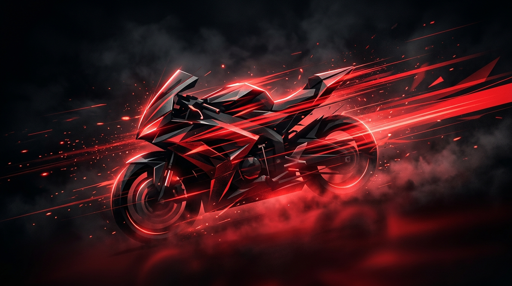

Error 404
Page Not Found
Looks like this road leads nowhere. The page may have moved or no longer exists.
Head back to the homepage or explore the latest videos, biography, and news from the Twin Throttlers universe.

Looks like this road leads nowhere. The page may have moved or no longer exists.
Head back to the homepage or explore the latest videos, biography, and news from the Twin Throttlers universe.